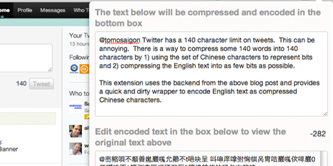

Step 1: Install t (Ruby Twitter command line client). Run the following (substitute your own Twitter ID):
t timeline @tomosaigon --csv --number 3000 > tweets.csv
Step 2: Convert CSV to JSON using http://www.cparker15.com/wp-content/uploads/csv-to-json/csv-to-json.html
Step pre-3:
cached=$(/usr/bin/grep $1 $CACHE) if [[ $cached != "" ]]; then echo $cached|/usr/bin/cut -d' ' -f2 ; exit fi url=$(/usr/local/bin/curl -v $1 2>&1|/usr/bin/grep '^< Location: '|/usr/bin/sed -e 's/< Location: //') echo $1 $url >> $CACHE echo $url
Step 3: Open Chrome Developer Tools and in the command line type "var a = " then paste the copied JSON. Hit enter.
var out = ''; for (var i = 0; i < a.length; i++) { var t = a[i]; var d = new Date(t['Posted at']); if (d >= new Date('2012-09-01 00:00') && d <= new Date('2012-10-01 00:00')) { var tweet = t['Text']; var tcos = tweet.match(/http:\/\/t.co\/\w+/g); if (tcos) { for (var m = 0; m < tcos.length; m++) { tco = tcos[m].replace(/\//g, '%252F'); $.ajax({url:'http://www.saigonist.com/saigonist/untco/' + tco, async:false, success:function(data){ tweet = tweet.replace(tcos[m], data.trim()); }}); } } tweet = tweet.replace(/("")/g, '"').replace(/(^|\s)@(\w+)/g, '\$1<a href="https://twitter.com/\$2" rel="nofollow">@\$2</a>').replace(/(^|\s)#(\w+)/g, '\$1<a href="https://twitter.com/#!/search/%23\$2" rel="nofollow">\$2</a>') out += ((d.getMonth() + 1) + '/' + d.getDate() + ' ' + d.getHours() + ':' + d.getMinutes() + ' ' + tweet + ' ' + '<a href="http://twitter.com/' + t['Screen name'] + '/statuses/' + t['ID'] + '" rel="nofollow">#</a>'); out += '\n'; } }
- tomo's blog
- Login to post comments
- Comments
My latest Chrome extension is a quick wrapper around a "service" (hoping the provider see it that way :) to compress English text and get around the 140 character bound on Twitter.
Twitter Decoder Ring: https://chrome.google.com/webstore/detail/idcnolgflhcckjdfpfbcehjocggffdjk

Twitter has a 140 character limit on tweets. This can be annoying when you are writing something and end up just slightly over (seeing negative character counts). So a lot of third party solutions have sprung up to allow one to tweet longer tweets by basically linking to a blog post. For example, TweetDeck does this. There is a way to compress some 140 words into 140 characters by 1) using the set of Chinese characters to represent bits and 2) compressing the English text into as few bits as possible.
For example, the entire paragraph above compresses into this non-sensical Chinese character string: 顜善嬔巖嗴允曏不t唈吷呈 呌噑庠嗱鲷凸亥丂仨丶乇儓乓(劗揦允圫s囸 严懦倡侭鹔丘柺槐嫢忒爠t唈堺倱t唈婐丕珹埼円七哢蠧呕囫 自t唈吷讴鏞弣恟帺呙冑咭巖嗴佽哻巖0簝噯呝丕1哼测樖匡螎諑歘丂2哼檂鎗俫抆哻与亩歘挍叜
I have always thought it a bit unfair that Chinese Twitter users get to say a lot more in 140 characters than we English-speakers do, because each Chinese character essentially represents an idea and often a complete word, rather than just a sound in an alphabet (like the Latin, Arabic, Hebrew, or even Vietnamese alphabets). On the other hand, Chinese Twitter users aren't allowed to access Twitter so I guess it's a draw.
A description of the project to compress English words into Chinese characters is found at: http://thevirtuosi.blogspot.com/2011/08/tweet-is-worth-at-least-140-words.html and a web frontend for the Python script that does the compression can be found at http://pages.physics.cornell.edu/~aalemi/twitter/
It's important to note that although the characters are real Chinese characters, the string that is created most likely isn't correct or meaningful Chinese when read by a Chinese person.
This extension uses the backend from the above blog post and provides a quick and dirty wrapper to encode English text as compressed Chinese characters.
Attachments:
{kind=link}
- tomo's blog
- Login to post comments
- Comments
Seesmic Web has had a problem for as long as I've used it. I was hoping they would fix it on their own but as of the last update (which broke Seesmic Web for awhile) would take care of it. The problem is that tweets or other posts just up and disappear while you're in the middle of reading them. I use Seesmic to scan a days worth of tweets because of its compactness and automatic relatively responsive infinite scroll. But you know there's a problem when all of your timeline from "2 hours ago" to "14 hours ago" is missing.
There. I fixed it.
Install Seesmic Zombie Fix for Chrome (and maybe other browsers)
The problem seems to be that Seesmic periodically culls tweets that it thinks shouldn't be shown, maybe because they're too old and there's not enough space (who knows?). This Chrome-based userscript (it should work with FireFox using greasemonkey, and also natively in Opera) watches for the tweet-snatcher to do its reaping and then saves the zombie tweets before they end up in tweet-purgatory. The "saved" tweets will then show up at the top of your timeline with a pink background on the "ago" time.
Caveats: the "ago" time will no longer be updated automatically, and other javascript-y actions on the tweets will no longer be linked up. So the expand-contract on click no longer works. I worked around this by expanding all undead tweets. But at least you will be able to read tweets from hours ago without having them "rapture" on you.
- tomo's blog
- Login to post comments
- Comments
Since I mostly use Hootsuite and Seesmic for reading my Twitter timeline (the other big reader, TweetDeck, won't connect to both Twitter and Facebook in either it's Chrome app or desktop versions), I've updated h8sq: the 4sq killer to work on those clients.
This also includes performance enhancements for the Twitter.com version.
Furthermore, if you open your Chrome Developer JavaScript console, you will see log messages for each hated on FourSquare tweet like so:
"hated on tomosaigon"
:)
Do you find Hootsuite's "Promoted Tweets" distracting? I've also hacked together an ad blocker for Hootsuite. Rather, it should be called an ad blacker, as it blacks out the ad but still makes it clear who is spamming you, and you can still read the full ad by mousing over it.
Tired of Foursquare, Inc. spamming your Twitter? Could you care less that someone goes somewhere so often they become its "mayor"?
Take back your Twitter feed with h8sq, a plugin/extension for the Google Chrome
browser which will:
Remove annoying tweets like "I'm at McDonalds. http://4sq.com/stupid
Remove annoying tweets like "I just became the mayor of McDonalds! http://4sq.com/stupid"
Remove annoying tweets like "I just unlocked the Douche badge! http://4sq.com/stupid"
Remove annoying tweets like "I just ousted So-and-so ..." (new)
It will leave alone tweets that have been personalized or merely mention 4sq.
If you run chrome just install the attached script, which should also work with Opera and with Firefox via Greasemonkey.
Install h8sq for Chrome (and maybe other browsers)
UPDATE: Now works on Twitter.com, Seesmic.com, and Hootsuite.com!
- tomo's blog
- Login to post comments
- Comments
© 2010-2014 Saigonist.
Recent comments
1 year 11 weeks ago
2 years 3 days ago
2 years 1 week ago
2 years 3 weeks ago
2 years 19 weeks ago
2 years 19 weeks ago
2 years 19 weeks ago
2 years 19 weeks ago
2 years 19 weeks ago
2 years 19 weeks ago